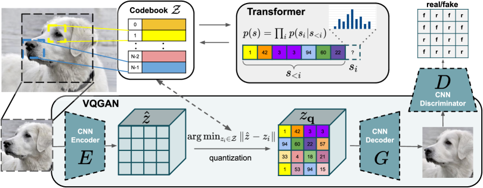
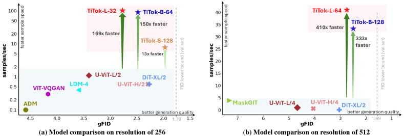

传统学习式压缩（Ballé 2017/2018）使用连续 latent 空间 + 标量量化：encoder 输出连续向量，量化为整数值，用参数化概率分布（高斯/GMM）估计熵，再用算术编码压缩。
Token-based 方法走了不同的路：用向量量化（VQ）替代标量量化，将连续向量映射到码本中的最近码字。编码的对象是码本索引（离散 token），而非连续值的概率分布。先验模型可以利用 AR/LM 风格的 token 级先验。
Token-based 压缩将图像压缩与视觉 tokenizer 研究、LLM 的"下一个 token 预测"范式统一到同一个离散表示空间。这意味着压缩研究可以站在 LLM 和视觉 tokenizer 研究的肩膀上——同一个 tokenizer 既可以用于压缩，也可以用于生成、理解、编辑。
离散隐表示的变分自编码器。Encoder 输出连续向量 → 最近邻查找到码本中的码字 → 传输码本索引 → Decoder 从码字重建图像。损失函数由三部分组成：重建损失（L1/L2）+ Commitment Loss（保持编码器输出与码字一致）+ Embedding Loss（更新码本）。
问题：生成质量有限，码本坍缩（codebook collapse）——只有少量码字被使用，大量码本空间浪费。

关键创新：将 GAN 判别器引入 VQ-VAE 训练。判别器约束感知质量，解决 VQ-VAE 生成模糊的问题。Transformer 解码器（GPT-2 风格）在 token 序列上做自回归生成。码本大小通常 1024 或 4096。
从已有笔记（VQVAE Compression Investigation）中提取的关键结论：

TiTok 是图像压缩与 1D Visual Tokenizer 研究线交叉的里程碑。传统方法将图像切成 16×16 的 patch，256×256 的图像需要 256 个 2D token。TiTok 将图像"展平"为 1D 序列，仅用 32 个 token 就能编码整张图像。
这不仅大幅降低了 token 数量（从 256 到 32，8 倍压缩），更重要的是改变了建模方式：1D 序列天然适合 AR/LM 风格的先验模型。
根据信息熵和上下文动态分配计算资源。为不同输入图像分配自适应不定长 token——高密度信息区域获得更多 token，低密度区域减少 token。这本质上是内容感知的比特分配，是传统压缩中率失真优化（RDO）的 token 级版本。
在生成式 VQ-VAE 的潜在空间中进行变换编码。潜在空间提供更大稀疏性、丰富语义和更好感知对齐。Semantic Token-Guided 版本（ICASSP 2026）进一步增强。
解决 VQ 不可微分导致的梯度中断问题。在传统 VQ 中，最近邻查找是离散操作，梯度无法回传。RDVQ 通过可微近似使梯度可以穿过量化层，实现端到端的率失真优化。
| 策略 | 方法 | 码本大小 | 效果 |
|---|---|---|---|
| 小码本 | 标准 VQGAN | 1024 | 10 bit/token，压缩率高但重建受限 |
| 大码本扩展 | VQGAN-LC (NeurIPS 2024) | 100,000 | 99% 码本利用率，兼顾表达力与紧凑性 |
| 聚类缩减 | Fine-tuned VQGAN (DCC 2024) | 缩减后 | <0.04 bpp 保持感知质量 |
| 残差量化 | RVQ | 多个小码本 | 渐进式编码，高效率 |
| 自适应粒度 | Control-GIC | 动态 | 单模型多比特率自适应 |
预训练 AR 视觉基础模型（Cosmos, LlamaGen, VAR）直接用作图像编解码器——不需要微调编解码器，直接利用预训练模型的"下一个 token 预测"能力。
核心洞察：AR-VFM 的 token 预测能力本质上是高效的统计模型，可以用于熵编码。生成与压缩统一：解码器可重新用于无条件图像生成。
「Token-based 压缩的本质是先离散化，再压缩。」
「码本是瓶颈也是机会。」
「与 LLM 的统一是趋势。」
「ALIT 的自适应长度是关键创新。」